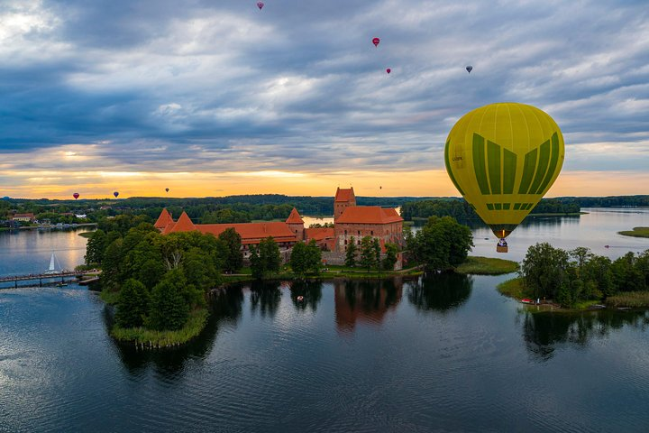

Hot Air Balloon Flight
The balloon tour is must to do thing for everybody, visiting Lithuania. Don't miss a chance, book a flight right now from €160.00 per adult
Lithuania
Vilnius, Lithuania’s capital, is known for its baroque architecture, seen especially in its medieval Old Town. But the buildings lining this district’s partially cobblestoned streets reflect diverse styles and eras, from the neoclassical Vilnius Cathedral to Gothic St. Anne's Church. The 16th-century Gate of Dawn, containing a shrine with a sacred Virgin Mary icon, once guarded an entrance to the original city.
The balloon tour is must to do thing for everybody, visiting Lithuania. Don't miss a chance, book a flight right now from €160.00 per adult
Live music concerts, performances, exhibitions, guided tours, bars, food trucks are waiting for you everyday.
Known to Lithuanians as a symbol of Soviet resistance—and a longstanding pilgrimage site—travelers can visit the impressive Hill of Crosses.
Do you want to set a time record or take your time to visit museums, churches, etc., that's up to you.
Welcome to historical premises full of riveting illusions, wonderful atmosphere, and helpful staff.
An impressive and very colorful Orthodox Church, close to the Gate of Dawn.
Explore more here.
This is something you don’t want to miss – on 25 January 2023, Vilnius marked its anniversary and entered into its 8th century.
A rapidly-growing Vilnius tech sector — TechFusion — has been supporting Ukraine’s war against Russia all year.